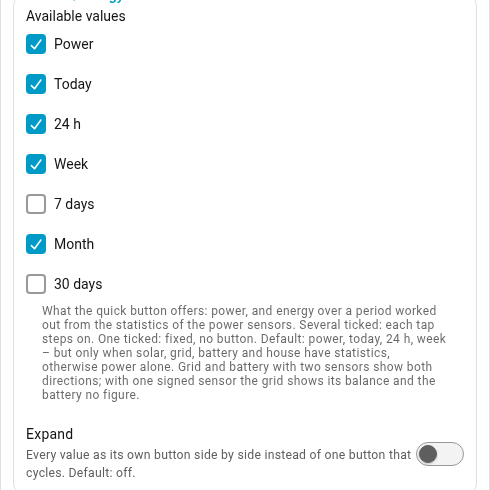
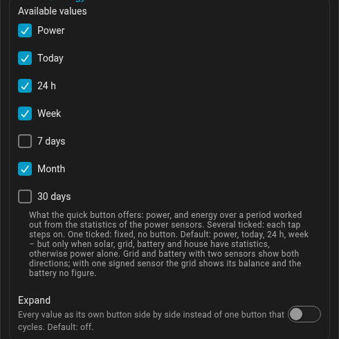
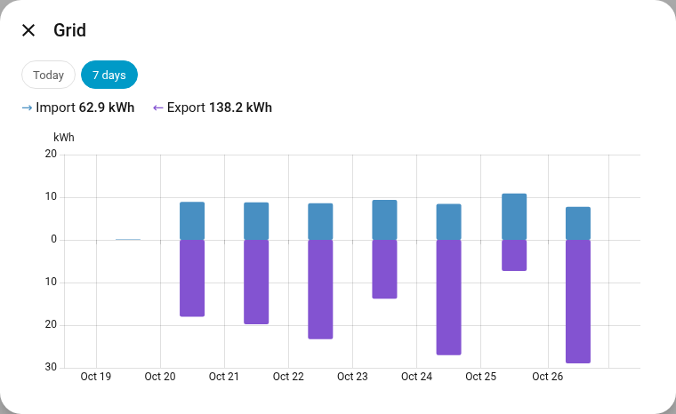
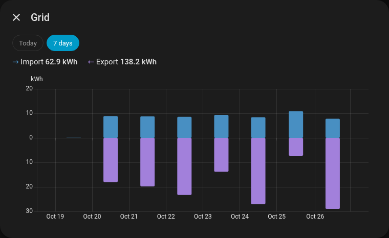

view:
energy_periods: [power, today, 24h, week, 7d, month, 30d] # any of themEnergy over a period
Besides power, the card can show energy: what came from the sun today, what was bought this week, what the heat pump used this month. It needs no energy sensors for that - it adds up the long-term statistics Home Assistant keeps of the power sensors that are already configured.
Try it: the card starts on kW and % kWp, the slider sets the time of the invented day. The PV ring shows the power against the peak power of all sources: it grows with the sun and gets smaller towards the evening, and the shares move from the balcony in the morning over the roof to west in the evening. With Today the card counts from midnight up to the time set, and the ring shows the average power since, night hours included. 100% shows the sources' shares instead.
|
Important
|
Required: state class "Measurement". Home Assistant keeps long-term
statistics only for sensors with the state class Statistics start only once the state class is set; set later, everything
before is missing. To check: Developer tools → States - the entity must have
the attribute |
In the editor the periods sit in the group Quick buttons, part Power/energy:


The quick button power/energy next to the filter button then steps through
kW (the power view, power; Watt with power.unit: W) and the periods
switched on. Without any setting it offers power, today, 24 h and week (see
Quick buttons):
| Key | Chip | Period |
|---|---|---|
|
Today |
since midnight |
|
24 h |
the last 24 hours |
|
Week |
since the first day of the week as set in your Home Assistant profile |
|
7 days |
the last 7 × 24 hours |
|
Month |
since the first of the month |
|
30 days |
the last 30 × 24 hours |
Every period ends at the last statistics Home Assistant has written, a few minutes behind the clock. The rolling ones are exact to five minutes; 30 days starts on the full hour, because Home Assistant keeps its five-minute statistics only about ten days - up to an hour shorter, never made up.
- PV and house show one figure each, in kWh.
- Grid with two sensors shows the import above the icon (→) and the export below it (←), battery with two sensors the discharge above (↑) and the charge below (↓) - over a day, both happen. With one signed sensor see below. The state of charge is a now, not a period, so it is not shown.
- The list and the ring work with the energy of the period. Thresholds
given in W count as W × 1 hour:
min_consumer_w: 10hides consumers below 10 Wh. - The dots run on the mean power over the period - its energy divided by the time it took - with the usual thresholds, so a month moves like its average day, not at top speed.
- Extra values and the state words ("import", "charging") are hidden; their room stays, so nothing moves when you switch.
- Tapping a node still opens its history.
Grid and battery in detail. With two sensors each, a tap on grid or battery opens a window with the kWh per hour (Today, 24 h) or per day (longer periods): import or discharge upwards, export or charge downwards, the totals above - exactly the figures at the node. The periods at the top of the window are the card’s; switching there leaves the card as it is. A tap on a total opens its sensor’s history. Hours filled in from neighbouring values are paler. For the battery the state of charge stands below; where Home Assistant no longer keeps the single readings (10 days by default), a faint band shows the lowest and highest value per hour or day.
Solar, house and wallbox in detail. The same window opens in three more places, each with power and energy:
- Solar with several sources: each source an area or bar in its colour, stacked, with a thin grey line for the sum on top. The header shows the sum first – the node’s figure – then each source; a tap on a source opens its history.
- House, when a balcony plant feeds in past the house meter (see Balcony solar): one line or bars of the calculated house value, exactly the figure in the circle. Without a balcony plant a tap opens the house sensor’s history as before.
- Consumers with a state of charge, such as the wallbox (see Wallbox and EV): the power, with the car’s charge below.


One sensor or two for grid and battery. An hourly mean of a signed sensor
cannot tell how much went each way - on most days the grid does both - only the
balance is exact. So with a single signed sensor the grid shows one figure,
its balance (→ net import, ← net export), which is also what its dots show, and
the battery shows no figure and no flow. PV, house and consumers are exact
either way. A derived grid or battery (see above) does not work with the
energy mode: the option is locked in the editor and the quick button does not
appear. To see both directions, give the card two sensors each - two Template →
Sensor helpers split a signed one (unit W, device class power, state class
measurement - see above):
{# import #}
{{ [states('sensor.grid_power')|float, 0]|max if has_value('sensor.grid_power') else none }}
{# export #}
{{ [-(states('sensor.grid_power')|float), 0]|max if has_value('sensor.grid_power') else none }}The battery works the same way; positive means discharge there:
{# discharge #}
{{ [states('sensor.battery_power')|float, 0]|max if has_value('sensor.battery_power') else none }}
{# charge #}
{{ [-(states('sensor.battery_power')|float), 0]|max if has_value('sensor.battery_power') else none }}If your sensor reports it the other way round (charging positive), swap the two templates.
none while the sensor is unavailable keeps an outage out of the statistics
as a gap, rather than as a measured zero.
Statistics only exist from the moment a sensor is created, so new helpers show "Month from 10/21" in the chip until a whole month has passed.
How sure a figure is. Home Assistant’s statistics can have holes - a restart, an integration that was down. The card fills an hour that is missing for one of the balance values (PV, import, export, discharge, charge, house) from the other five, otherwise from the same hour the day before (or after). An hour without PV after a dark hour counts as zero: small inverters switch off at night. A figure is then coloured by how much of the period was filled:
| Filled | Shown |
|---|---|
up to 2 % |
normal |
2 – 10 % |
muted blue-grey |
more than 10 % |
amber |
Hovering over the figure says how much. If one of the main sensors only has statistics from a date inside the period, the whole period counts from then - the chip says "Month from 10/8" in amber - so that the balance still adds up. Nothing is ever extrapolated. A consumer that is newer than the period does not shorten it; its row and the remainder are amber, and a consumer without statistics (a sensor without a state class) is listed last with a dash.